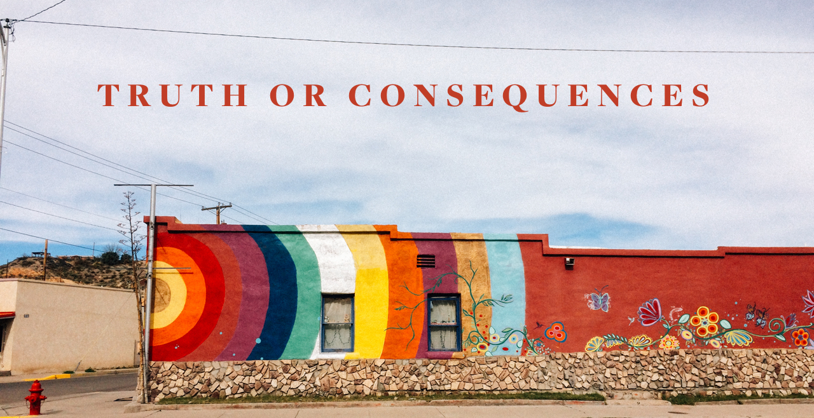

-


Riverbend Hot Spring and Resort
Sometimes work consumes your life and you need a serious break to sit in hot springs along the Rio Grande for 2 days. Riverbend Hot Springs in Truth or Consequences was that time for us. Riverbend is a perfect mix of quiet relaxation and local charm. There are several different lodging options. We stayed in a courtyard suite which had a living room, kitchen, bedroom and bathroom. If you are looking for a five star spa experience, this isn’t it but if you enjoy t airbnb or staying at a really nice youth hostel, then this is your spot.


There are 5 public pools that overlook the Rio Grande. The resort is a whispering zone, which truly makes the experience sublime because who really wants to relax in healing geothermal pools whilst listening to idle chit chat? We don’t know if it’s because we came in December or what but the pools were surprisingly available and the crowds minimal. They were also doing construction on a bunch of new pools, which will only make the place more awesome! There are also three private pools. We tried out Rio and Cielo. Make sure to book a private pool for the evening because (screw you NYC) you CAN ACTUALLY SEE THE STARS! Also, just in case you really want an even more natural experience – the private pools are bathing suit optional.

Our suite at Riverbend had a kitchen so we ate a lot there but we did head into town for lunch and ate at the Passion Pie Café. It’s a coffeehouse/bakery and the perfect place to grab a nice light lunch.
We went into town with high hopes of killing a few hours. We quickly realized we probably would only be spending a short time visiting maybe 2-3 stores. There is great artwork and with the feeling of an abandoned town that is perhaps at the beginning of an upswing? From here we went to where we think everything goes down in this town – the WalMart.